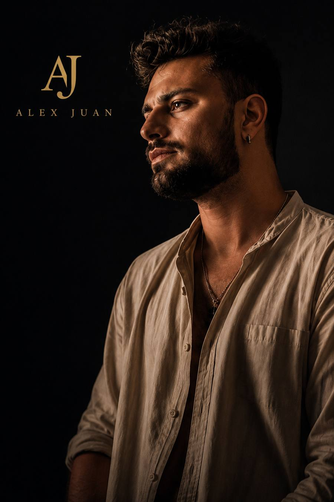

Accueil › Mariage
Chanteur pour votre mariage à Bordeaux et en Gironde
De la cérémonie à l'ouverture du bal, Alex Juan chante en live les moments forts de votre journée. Son et lumière inclus, avec Antonin à la technique : vous n'avez rien à gérer.
- Son et lumière inclus
- Devis sous 24 h
- Basés près de Bordeaux

Une voix live pour chaque moment de votre mariage
Un mariage ne se vit qu'une fois. La musique live donne à chaque étape une émotion qu'une playlist ne remplace pas : l'entrée à la cérémonie, les regards au vin d'honneur, la première danse.
La cérémonie
Une chanson pour votre entrée, l'échange des alliances ou la sortie : le moment que vos invités n'oublieront pas.
Le vin d'honneur
Une ambiance douce et élégante pendant que vos invités vous félicitent et trinquent.
Le dîner
Des sets pensés pour laisser place aux discussions et aux discours, sans jamais couvrir les conversations.
L'ouverture de bal
Votre première danse en live, puis les refrains que tout le monde chante pour lancer la soirée.
Comment ça se passe
Vous nous écrivez
Date, lieu, nombre d'invités, moments souhaités : vous recevez un devis gratuit sous 24 h.
Vous bloquez votre date
La réservation se fait en ligne avec un acompte de 100 €, déduit du total. Votre date est alors à vous.
On prépare votre répertoire
Vos chansons coup de cœur, celle de votre entrée, celle de votre première danse : on construit la playlist ensemble.
Le jour J
Antonin installe le son et la lumière environ 2 h avant. Vous profitez, on s'occupe de la musique.
Ce qui est inclus
- Le chant live d'Alex Juan aux moments que vous choisissez
- La sonorisation et l'éclairage, installés et réglés par Antonin
- Un répertoire en français avec une touche d'anglais
- Vos chansons sur demande (au moins 1 mois avant)
- Les frais de déplacement, indiqués dans le devis
- Un échange avant le mariage pour caler le déroulé
Vous voulez entendre la voix avant de vous décider ? Regardez nos vidéos et parcourez le répertoire.
Mariages à Bordeaux, en Gironde et ailleurs
Basés à Bruges, à deux pas de Bordeaux, nous chantons dans les châteaux, domaines et salles de réception de toute la région, et partout en France.
- Bordeaux
- Bruges
- Mérignac
- Pessac
- Talence
- Le Bouscat
- Bassin d'Arcachon
- Cap-Ferret
- Libourne
- Saint-Émilion
- Médoc
- Lacanau
- Entre-deux-Mers
- Toute la Gironde
- Nouvelle-Aquitaine
- Partout en France
Questions fréquentes
Combien coûte un chanteur pour un mariage ?
Chaque mariage est différent : le prix dépend de la durée, des moments choisis et du lieu. Nous vous envoyons un devis gratuit et personnalisé sous 24 h.
Combien de temps à l'avance faut-il réserver ?
Le plus tôt possible : les samedis de mai à septembre partent vite, souvent 6 à 12 mois avant.
Pouvez-vous chanter la chanson de notre entrée ou de notre première danse ?
Oui. Donnez-nous vos titres au moins 1 mois avant le mariage, et nous les préparons pour vous.
De quoi avez-vous besoin sur place ?
D'une prise électrique 230 V et d'un espace d'environ 3 × 3 m, à l'abri en cas de pluie. Nous apportons tout le son et la lumière. Si la prestation couvre le dîner, nous vous demandons de prévoir un repas pour l'équipe.
Chantez-vous en extérieur, pour une cérémonie laïque ?
Oui, à condition d'avoir un abri en cas de pluie et une prise électrique à proximité.
Vous déplacez-vous en dehors de Bordeaux ?
Oui, dans toute la Gironde, en Nouvelle-Aquitaine et partout en France. Les frais de déplacement sont indiqués dans le devis.
Votre date est encore libre ?
Dites-nous la date et le lieu de votre mariage : vous recevez une proposition sous 24 h.
06 27 33 03 80